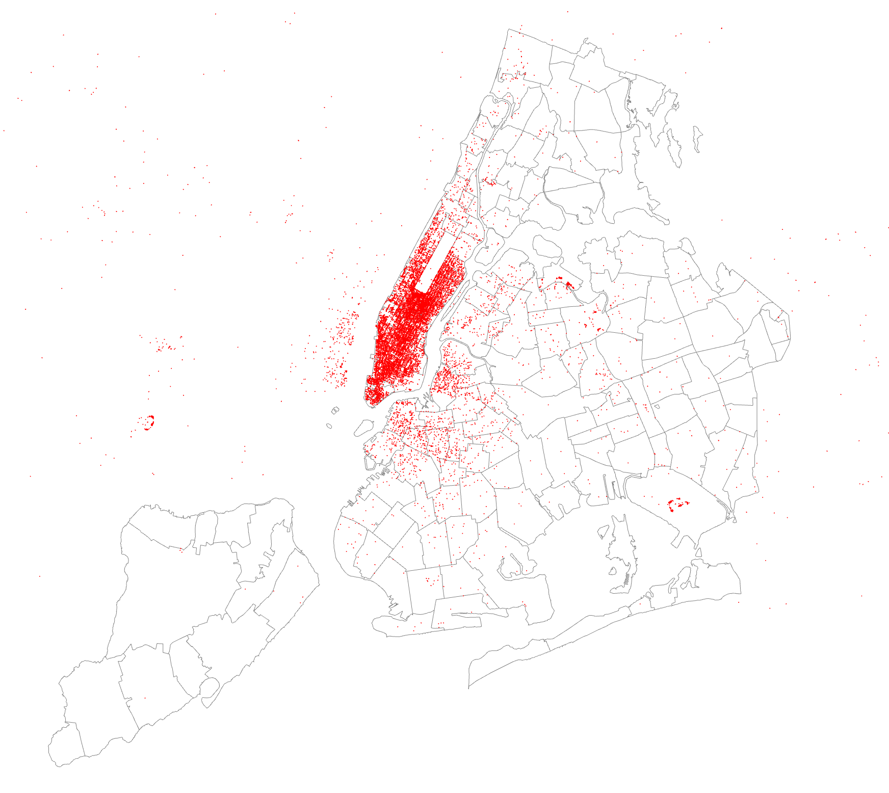

Data Visualization (DSC 530/CIS 602-02)
Project Proposal
Datasets
In this project, I will analyze about Uber trips data in New York city compared to other FHV (for-hire vehicles) companies. The data contains over 4.5 million Uber pickups in New York City from April to September 2014, and 14.3 million more Uber pickups from January to June 2015. Data also contains 10 other for-hire vehicle (FHV) companies including Lyft company.
Datasets URLs
- Uber TLC FOIL Response
- NYC Taxi & Limousine Commission (TLC)
- Unified New York City Taxi and Uber data
- New York map data
Datasets types and semantics
| Header | Definition |
|---|---|
Date/Time |
The date and time of the Uber pickup |
Lat |
The latitude of the Uber pickup |
Lon |
The longitude of the Uber pickup |
Base |
The TLC base company code affiliated with the Uber pickup |
Data contains Date/Time, Latitude, Longitude, and Base code for FHV based on TLC base company
of each pickup by Uber and other 10 FHV companies in New York City from April to September 2014, and from January to June 2015. The datasets are obtained from
NYC TLC Company by submitting a Freedom of Information Law request on July 20, 2015 from FiveThirtyEight.
Due to passenger privacy concern recently, the latest data was 2 years ago, in 2015.
Moreover, because the size of data is tremendous, I will try to visualize data as much as possible,
to find out the success of Uber when it takes millions of rides from traditional taxis in New York, the place taxis are everywhere.
The Uber Base codes by TLC base company:
| Base Code | Base Name |
|---|---|
| B02512 | Unter |
| B02598 | Hinter |
| B02617 | Weiter |
| B02682 | Schmecken |
| B02764 | Danach-NY |
| B02765 | Grun |
| B02835 | Dreist |
| B02836 | Drinnen |
Tasks
Uber trending
- How many rides Uber have more each month/year?
- How many rides traditional taxis have less each month/year?
Density
- Which location has the highest/lowest density of Uber rides?
- Which day in week has the highest/lowest density of Uber rides?
Difference
- Difference between taxis and Uber?
- Difference between weekdays and weekends ride density?
- Difference between each time in day? For example, rush hour vs. normal/working hour.
Other ideas
- Any change in Uber policy/pricing affects number of rides?
- Other factors such as weather, events, holidays affect Uber rides?
Sketch
Uber pickup locations density plot 
Ideas & Requirements